Ezek személyes tapasztalatok alapján írom. Nem akarom megbántani azt akinek más a véleménye.
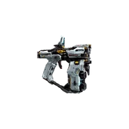
Meg grippeled, az ellenfelek gyengepontjára célzól, és lősz. Jó a DMG a legalapabb fegyverhez képest. És mivel végtelen lőszer van benen ezért hasznos ha felakarod fedezni a pályákat.
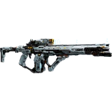
Kevés a DMG output, magas HEAT generálás, De senki se használ heatet. ha % arányban nézed a gripgun sokkal nagyobb DMG visz be mint a Pulse Carbinel feltőltenéd a heatbart hogy le stunnold az ellenségeket és ugy vigyél be 1db big DMGet. Ezel 2 probléma van. 1: Későbbi ellenfelek/bossok Heat elenálása magas. 2: Ha az Ellenfélnek van base defensje akkor a dmged viszonylag nagy százalékátát elveszted.
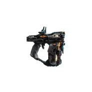
Grip gun csak fekete ha tippelnem kéne akkor a Neo Bushido DLC skinhez lett csinálva.
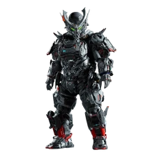
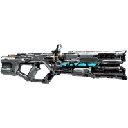
Meh fegyver. Egy Shotgun és én soha nem szerettem a Shotgunokat AAA játékokban. Közel halálos. De ha az ellenfél 3 lépisnyire van tőled akkor Meh. Mondjuk a legelső Támadó fegyver amit kapsz szovallll... Meghát az Ellenfelek gyengepontjaik általában nincs annyira kiterjedve hogy 100% potenciált szerezz.
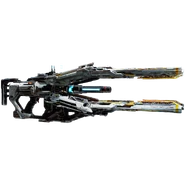
Abszolúte a legjobb. Maxos szinten 3szorosára is feltöltheted és ha a gyenke pontját eltalálod az elenfélnek akkor az vagy meghal, vagy még egy lövésel meghal. Viszonylag Hamar megkapod és jó a Range. Át Piercel ellenségeken de Challangeken kívül nem nagyon volt hasznos.
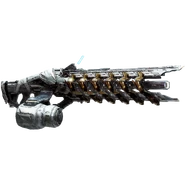
Vedd elő, töltcsed fel, és nézed ahogy a világ ég. Maxos szinten a Photon Laser elolvaszt mindent az útjábban. De jobb e mint a Pierce Charger? Uhhh Néha? Ha nincsen töltényem a Pierce Chargerbe akkor lecserélem megbánás nélkül. Kicsivel több heatet generál.
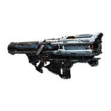
Őszinte leszek. Challangeken kívül soha nem használtam. De még a Challangekben is elkerültem. Dronok ellen jó DE mire megkapod addigra lesznek nagyobb segfájdalmak mint a Drónok.
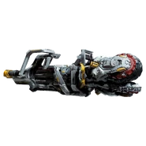
Egy nagyon Endgame fegyver. Az első végig játszásod után kapod meg. Erős és tudja interuptolni az ellenfelek támadását. De nincs sok tapasztalatom vele
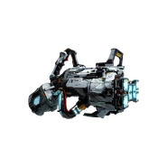
Ez szószerint az a piros money gun amit látsz memekben. Használd el a pénzed(lim) hogy lőjél vele. és még fejleszd is fel ami mégtöbb pénz(lim). Nem köszi, lehet erős. meg ha jól emlékszem kocsikat is tudsz vele lőni. de nem nagyon probáltam.
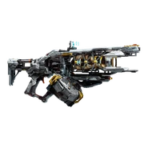
Könyen használható? Megvéd ha túl sok az ellenfél és megálitja őket időt adva neked? Bossokat is megálít? Hell yeah! Ez az egyik olyan Tactical Unit amit használtam. És 1 dolgot csinál. Azt is a legjobban.
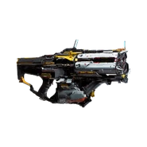
Egy határozottan nagy DMG és HEAT generálás miközben a földre küldi a nagyobbik ellenfeleket és megöli a kisebbeket. Tömegek ellen jó lehet meg bossok ellen hatásosabb (Többb DMG visz be) mint a Stasis Net.
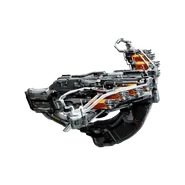
Mid. Rá cuppantasz bombákat az ellenfelekre, a Hacking grid kisebb lesz. És ha sikeresen meghackeled akkor felrobannak kevés dmg és sok HEATed adva. Csak... szimplán rossz.
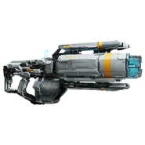
Uhh... Hack DMG ha átmész rajtuk. De eleve az a célod hogy a hackelést minél hamarabb befejezd miközben 1001 támadást dodgeolsz. Ez lehet hogy rosszabb mint a Sticky Bombs az legalább a Hacking gridet lecsökkenti szóval néhány boss ellen igenis hasznos.
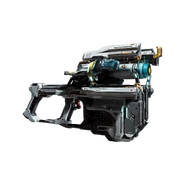
Tedd le, várd meg ameddig belesétálnak az ellenfelek és utána robancsad fel hogy át vidd az ellenfeleket OPEN statebe nagy Hacking DMG-et bevéve. Jobb mint a Code Generator. De nem jobb mint a Stasis Net.
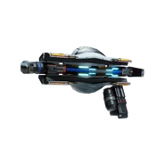
Jó? Eltereli a figyelmét az ellenfeleknek hogy aztán lelődd őket Riot Blasterrel.
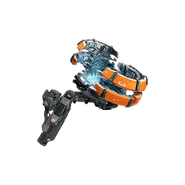
Egy pajzsot hozol létre ahove lövöd és tankolja az ellenfelek támadásait. Nagyon hasznos főleg a No-hit challangeknél. Megmég megvéd 1db Boss specko támadásától de nem spoilerezek. Találd ki te melyik bossnak melyik támadása!
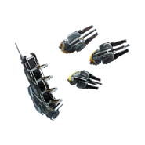
Nem. Ez rossz. Alig sebez. Alig generál Heatet, Még megse véd. Ki lősz 5 drónt csak azért hogy 40 mp mulva eltünjenek. Ezt kerüld el ha nem vagy valami mániákus.